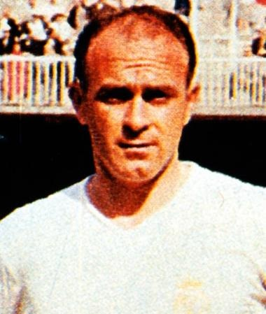

Es un conglomerado de cientos de miles de millones de estrellas, gas interestelar (fundamentalmente hidrógeno) y polvo interestelar (granos de silicantos). Se mantiene como sistema gracias a la atracción gravitacional.
|  |
El mejor jugador de todos los tiempos. Atacaba, defendía, todo lo hacía bien. Un líder dentro y fuera del campo. Con él, el Real Madrid alcanzó su época más gloriosa. La, hasta el momento, irrepetible hazaña de conquistar cinco Copas de Europa consecutivas asombró al panorama futbolístico internacional. Di Stéfano fue reconocido con dos Balones de Oro (1957 y 1959) como representante de un equipo de ensueño. Además, es el único jugador del mundo que posee un Súper Balón de Oro. Lo recibió en 1989. Con 19 años debutó en la máxima categoría con River Plate y con 21 se proclamó campeón y máximo goleador del torneo. Una huelga general en el fútbol argentino le hizo emigrar a Colombia, donde triunfó con la camiseta de Millonarios. Su fútbol enamoró a todos y el Real Madrid fichó al mejor jugador del momento. Ganar. Ésa fue la única palabra en el diccionario de Alfredo Di Stéfano. Toda su trayectoria en nuestro club estuvo repleta de éxitos y goles. En total marcó 308 tantos y ganó en cinco ocasiones el Trofeo Pichichi. Absoluto dominador en España y en Europa, el Real Madrid giraba en torno a su inconmensurable figura. Nacionalizado español, vistió la camiseta de la selección en 31 ocasiones. |
Real Madrid vino de atrás para ganar un emocionante Clásico después de que el gol de Gündogan había puesto al Barça por delante en el medio tiempo, pero Bellingham cambió el juego en una excelente segunda mitad. Se igualó en el minuto 68 con un golpe espectacular desde fuera del área y luego selló los tres puntos para lo slíderes en el tiempo de detención, aferrándose a Modrítico'es pelota dentro de la caja de seis yardas. Nuestro equipo está ahora a cuatro puntos del Barcelona. El Clásico tuvo el peor comienzo posible. Gündogan puso al Barcelona por delante en siete minutos, aprovechando dos desviaciones para vencer Kepa uno a uno. El lado local amenazó nuevamente nueve minutos después cuando el disparo de Fermín desde el interior del área golpeó el poste. Tuvimos que reaccionar en el Estadi Olímpic Lluís Companys y Rüdiger intenté hacer precisamente eso con un esfuerzo de largo alcance en el minuto 22. Carvajal también trató de atrapar al guardián con la guardia baja con un disparo cruzado que golpeó la red lateral en el minuto 38.